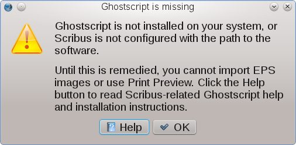

Per chi non lo sa, Ghostscript (gs), in senso stretto, è un cosiddetto “interprete PostScript,” e molti programmi utilizzano gs per operazioni di conversione, importazione ed esportazione di file PostScript. Ghostscript è diventato uno dei “mattoni” essenziali del software open source; sarebbe difficile immaginare una moderna distribuzione di software open source che non lo contenga.
Anche Scribus utilizza Ghostscript, e a volte ne sfrutta le funzioni più sofisticate che sono disponibili soltanto nelle versioni più recenti. Scribus si serve di gs per tre funzioni. La prima è l'importazione di file EPS rasterizzati e di certi file DCS nelle cornici immagine. La seconda funzione che richiede gs è l'anteprima di stampa. La terza è il generatore di codici a barre.
Se gs non è installato sul vostro sistema, o se Scribus non trova l'eseguibile gs, le tre operazioni sopra citate non sono possibili, e Scribus mostra un avviso ogni volta che viene lanciato:
|  |
Se gs è stato installato sul computer, ma Scribus non lo trova, potete inserire il percorso dell'eseguibile gs nelle preferenze di Scribus.
È sempre consigliabile avere Ghostscript nella più recente versione disponibile per il vostro sistema.
Come detto prima, Ghostscript è richiesto da molte applicazioni, tra cui il sottosistema di stampa; quindi è improbabile che non sia installato sul sistema. Se, per qualche ragione, gs non è presente sul vostro sistema, o se la versione presente è troppo vecchia (con Scribus dovreste usare almeno Ghostscript 8.6), potete scaricare l'archivio contenente il codice sorgente dal sito di gs. Fate attenzione a scaricare il vero e proprio Ghostscript, non ghostpdl, il cui codice sorgente si trova nella stessa directory. Poi seguite le istruzioni per la compilazione che trovate nell'archivio e installatelo.
Trovate spiegazioni nelle informazioni generali su Scribus in ambiente Windows.
Vi sono diversi modi per installare Ghostscript per Mac OS X, ma purtroppo nessuno di essi sembra avere la facilità a cui la maggior parte degli utenti di Mac sono abituati:
gs per varie versioni di OS X. Leggete il relativo file info per capire qual è la versione che vi serve;gs per mezzo di Fink;Trovate spiegazioni nelle informazioni generali su Scribus in ambiente OS/2 ed eComStation.
Vedi le informazioni generali su Scribus per Haiku.